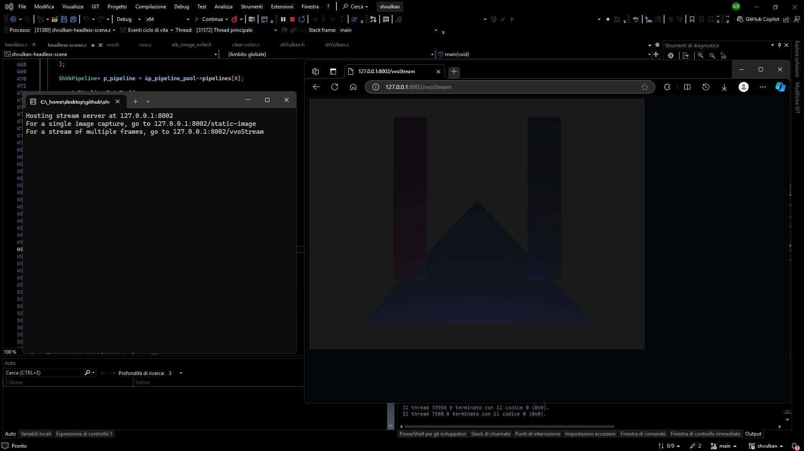

Table of Contents
shvulkan is a lightweight and flexible wrapper around the Vulkan API written completely in C, that makes it easier to work with graphics efficiently without writing thousands of lines of code.
Scene example: alfa blending, instancing and indexed draw calls example.

Headless scene example using vulkan-virtual-outputs: alfa blending, instancing and indexed draw calls also here, but the image is streamed in an http server.
Build status


The examples are frequently being tested on Windows 11, Linux Mint (virtual machine and pc) with different compilers (MSVC, gcc), and hardware configurations (RX580 4GB GDDR5, Radeon V Carrizo 500MB).
Clone and Build
Open the terminal and run the following commands:
CMake targets and variables
| CMake Target | Type | Configure Flags |
|---|---|---|
| shvulkan | library | / |
| shvulkan-docs | Doxygen outputs | / |
| shvulkan-clear-color | executable | SH_VULKAN_BUILD_EXAMPLES=ON |
| shvulkan-scene | executable | SH_VULKAN_BUILD_EXAMPLES=ON |
| shvulkan-compute-example | executable | SH_VULKAN_BUILD_EXAMPLES=ON |
If the cmake option SH_VULKAN_BUILD_EXAMPLES is enabled, the additional glfw target will be generated as a static library.
| CMake Variable | About |
|---|---|
| SH_VULKAN_VERSION | Version of the shvulkan library |
| SH_VULKAN_ROOT_DIR | Absolute path to the root of the repository directory |
| SH_VULKAN_BINARIES_DIR | Absolute path to the output binaries directory |
Examples
shvulkan ships with one compute example, one graphics clear color example, one graphics scene example and a headless scene graphics example, which instead of presenting images to the screen it streams the graphics output with an http server.